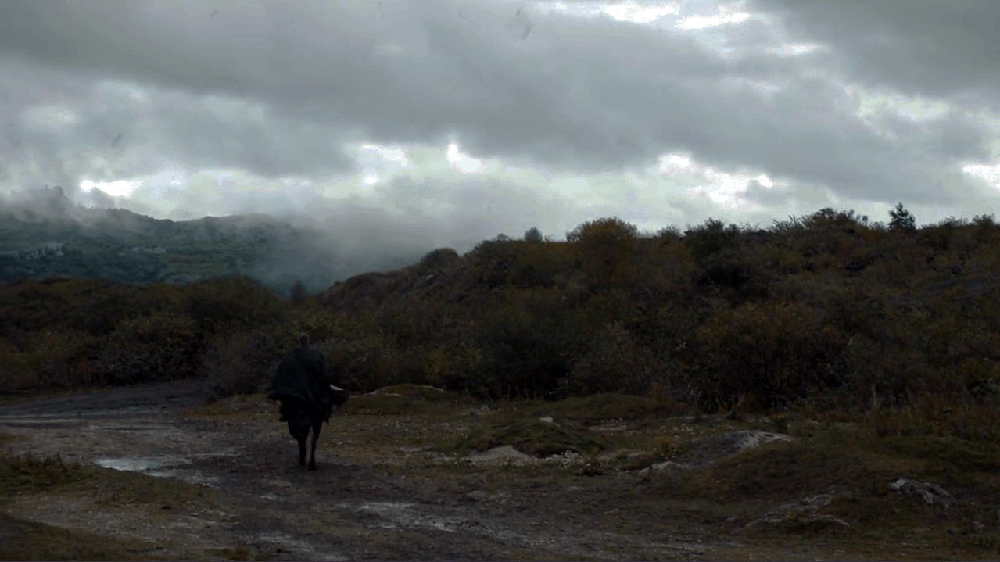

补充一点个人意见。我认为詹姆能够成功洗白，一个很重要的原因是“认同感”。一开始的时候，詹姆是作为一个较明显的反面人物出现的。不论是和自己的姐姐XX，还是把布兰推下高塔、和奈德作对，都不能让大家对他留下什么好印象。那时的他既是七国最负盛名的骑士之一，又是狮家长子、国王的小舅子，有钱有势，自然飞扬跋扈、目中无人。因此，在第三卷中，当詹姆引以为傲、能吃饭能拿剑的右手被砍去之后，读者中拍手称快者恐怕不在少数。对于一个骑士来所，失去右手等于失去一切。然而詹姆人生的谷底也是他洗白的开始，他与布蕾妮共同经历的这段旅程也是他成长的旅程。当他折返回赫伦堡救下布蕾妮、后来又将守誓剑赠与布蕾妮去寻找珊莎的时候，读者逐渐意识到，这位断了手的骑士，正在逐渐找回他的骑士精神。其实詹姆本来是有这样的骑士精神的。他在十五岁时就因为在剿灭御林兄弟会的战斗中因为作战英勇被亚瑟·戴恩爵士封为骑士，那时的他是以成为亚瑟·戴恩为理想的。正如他自己后来回忆的，“那个时候，世界多么单纯，身边的人都如新铸的长剑，锋利而明亮。我的十五岁，毕竟是一场梦幻么？大家都进了坟墓：拂晓神剑、微笑骑士、白牛、勒文亲王、爱来点黑色幽默的奥斯威尔·河安爵士、古道热肠的琼恩·戴瑞爵士、西蒙·托因和他的御林兄弟会、甚至直率的老萨姆纳·克雷赫……他们都不在了。而我呢，那个曾经的少年……他，又在何时进了坟墓？穿上白袍时？割开伊里斯的喉咙时？那个少年，从小想当拂晓神剑亚瑟·戴恩，但不知怎地，生命拐了个弯，最后成了微笑骑士。” 当疯王命令他杀死自己的父亲，并打算烧毁整个君临的时候，他在（御林铁卫的）誓言和人性中选择了后者，也因此被称为“弑君者”和“没有荣誉的人”。也许从那以后，他就逐渐放弃了对荣誉的坚持，自暴自弃，成为了自己曾经鄙夷的人——直到他失去一切后才幡然醒悟。说回认同感的问题... 我们每个人在詹姆身上，兴许都能看出些自己的影子。从一开始少年时代的单纯热血，到经历挫折与误解后的玩世不恭，再到跌入谷底之后重新找回自我，詹姆的经历，就是一个男孩到男人的成长过程。他丢掉了自己的右手，却找回了荣誉。而我们中的很多人，在不知不觉中走入人生的歧途，成为自己不想成为的人，却再也找不回曾经的初心。更有些人，在经历了人生重大的挫折之后，一蹶不振，失去了前进的动力。这两种人，在詹姆身上，都能找到警醒和激励。因为詹姆证明了，即使不能使用右手，也不妨碍你成为伟大的骑士。最后，我想说的是，很多时候我们喜欢小说或者电影里的人物，正是因为这样的“认同感”，或者说“移情”效应。我们喜欢一个人物，并非因为他/她是最招人喜欢的，而是因为我们在他们身上，看到了自己的影子。而一个小说家最杰出的成就，莫过于能让每个人读了之后都发出这样的感叹：“这不就是我么。”
 【2017.08.07更】
看完S07E04之后，突然想起来回头翻看这个答案，感慨万千。从第三卷（也就是剧集的第三季左右）开始，就对詹姆这个角色充满期待。按照马丁的套路，一个主要角色早期越是悲惨，越是有起底翻牌的可能性。丹妮焚而孵龙蛋，布兰残而成先知，詹姆都被砍了右手了，再怎么想日后也是必有奇遇，影响主线剧情也未可知。没想到自从剧集脱离原著的第六季开始，詹姆这个人设就一路崩塌。一会儿是在多恩一路开挂刷副本，一会儿又跟攸伦争风吃醋抢瑟曦，人物弧光这个东西已经被编剧扔到盛夏群岛去了。于是慢慢地会更加注意丹妮、提利昂和琼恩三个钦点主角的发展，也不再那么关注詹姆在做些什么了。... 直到这一集。当我们抛开比攸伦的铁种舰队开得还快的剧情不谈... 当画面切到最后部分，詹姆一个人策马持枪，冲向巨龙的时候。“Come on, boy." 就这么冲向可能是无法挽回的结局。”You fucking idiot!" 远处的提利昂虽已预料到他会这么做，却还是忍不住叫出来。但如果不这么做，他也不会是詹姆了。不是放荡不羁的詹姆，不是迷恋瑟曦的詹姆，而是十五岁，干净明亮，目光坚定的詹姆。那一刻，他心里想的是什么呢？或许想到了自小崇拜的亚瑟·戴恩，想到了“龙骑士”伊蒙，“镜盾”萨文，甚至“无畏的”巴利斯坦。想到了自己披上白袍的那一天，想到了击杀疯王的那一刻，以及罗勃和奈德蔑视的眼神。那一刻，或许他终于找到了属于自己的救赎。
【2017.08.07更】
看完S07E04之后，突然想起来回头翻看这个答案，感慨万千。从第三卷（也就是剧集的第三季左右）开始，就对詹姆这个角色充满期待。按照马丁的套路，一个主要角色早期越是悲惨，越是有起底翻牌的可能性。丹妮焚而孵龙蛋，布兰残而成先知，詹姆都被砍了右手了，再怎么想日后也是必有奇遇，影响主线剧情也未可知。没想到自从剧集脱离原著的第六季开始，詹姆这个人设就一路崩塌。一会儿是在多恩一路开挂刷副本，一会儿又跟攸伦争风吃醋抢瑟曦，人物弧光这个东西已经被编剧扔到盛夏群岛去了。于是慢慢地会更加注意丹妮、提利昂和琼恩三个钦点主角的发展，也不再那么关注詹姆在做些什么了。... 直到这一集。当我们抛开比攸伦的铁种舰队开得还快的剧情不谈... 当画面切到最后部分，詹姆一个人策马持枪，冲向巨龙的时候。“Come on, boy." 就这么冲向可能是无法挽回的结局。”You fucking idiot!" 远处的提利昂虽已预料到他会这么做，却还是忍不住叫出来。但如果不这么做，他也不会是詹姆了。不是放荡不羁的詹姆，不是迷恋瑟曦的詹姆，而是十五岁，干净明亮，目光坚定的詹姆。那一刻，他心里想的是什么呢？或许想到了自小崇拜的亚瑟·戴恩，想到了“龙骑士”伊蒙，“镜盾”萨文，甚至“无畏的”巴利斯坦。想到了自己披上白袍的那一天，想到了击杀疯王的那一刻，以及罗勃和奈德蔑视的眼神。那一刻，或许他终于找到了属于自己的救赎。
【2017.08.28更】 很高兴，看到第七季结尾，詹姆是唯一一个还能看到人物成长空间的人。虽然觉得詹姆的离开原本可以来得更早一些，比如在托曼死了之后，或者按原著暗示的，在石心夫人出现之后。但在这一集的最后离开，倒也颇为合适。一直觉得，詹姆很像杨过，或许是因为断臂的经历，或许是因为，两人都有从最初的玩世不恭，到最后的成熟稳重的人物成长。两人有着类似的狂狷性格，都被世人误解甚深而又不屑于辩解。杨过之幸运，在于他有他的小龙女；詹姆之不幸，却在于他爱上的是瑟曦。或许，詹姆就是那个娶了郭芙的杨过罢了。不过好在，他还有他的坚持，他的荣誉感，和他的底线。当这一切与他对瑟曦的感情冲突到无以复加的时候，他选择了离开。詹姆离开的场景，从配乐到摄影都堪称这一季最精彩的几幕戏。从他大踏步跨过维斯特洛地图走远，留下欲言又止的瑟曦，变奏版的Light of the Seven逐渐淡出，纯钢琴版的Main Theme响起，带出淡淡的伤感。詹姆孤身一人一骑，走在君临的古道上。当他还不太熟练地为金手带上防寒的手套，一片雪花飘落其上。Winter is here. Like Ned Stark always promised. 时隔多少年，君临又下起了雪。上一次君临下雪，还是在“错误的春天”那一年。那一年，发生了太多的事...故事中的人，无论是”预言中的王子“雷加，还是挥舞着战锤的劳勃，死守荣誉的奈德... 他们都死了。白雪飘落在死寂如空城的君临，如灰烬一般覆盖在历史的残骸上。当年万里觅封侯，匹马戍梁州。而今一人一骑，又将去向何方？不知道詹姆心中的答案是什么。当然，从编剧的视角，肯定是需要他前往北方的。不过我个人，倒更希望他从此浪迹天涯。收那么一个或两个侍从，惩恶扬善，保护弱者，就像邓肯爵士与伊戈那样,成为下一个传奇。
君临终于下起了雪，这也是丹妮莉丝曾在不朽神殿之中看到的幻象。
